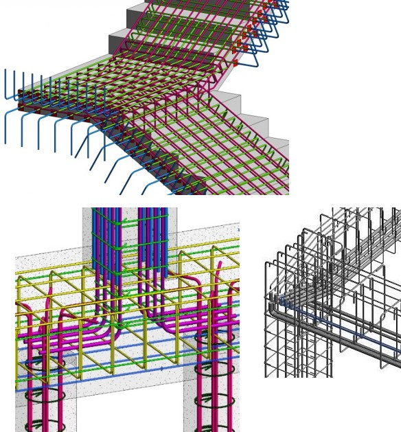
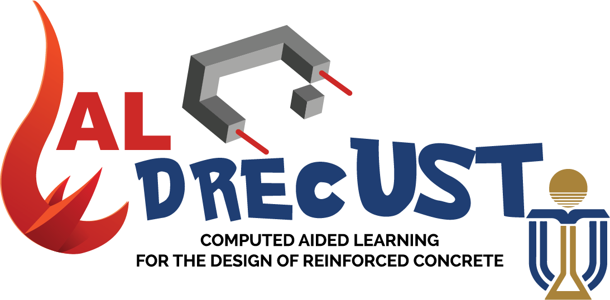

Surrogate-Assisted Constructability-based Multi-objective Free-clash Rebar Optimization design for Reinforced Concrete Frames
- There's a gap in the literature concerning the lack of clash-free rebar design workflows for irregular RC components and their intersections, such as concrete staircases - slabs/beams or cranked beams - columns. In today's needs for building engineering where irregular structures are becoming more popular, the development of new AI models and optimization design frameworks to adreess this gap is preponderant more efficient constructability-based design.
Maintanance and development of CALRECOD and CAL-software
- As the creator of CALRECOD it is my resposibility to keep on developing new functions for further versions of CALRECOD. At this point new functionalities for the optimal design of hollow concrete columns are being developed as well as for the design of prestressed concrete girders.

Maintanance and development of CADRECUST and CAL-software
- A new project is in motion. Computed-Aided Design for Reinforced Concrete HKUST (CADREC-UST). In contrast to CALRECOD, this OS package contains broader functionalities, not only for engineering education but for research. On of its components is, for instance, CALDREC-UST, similar than CALRECOD, but with more teaching environements, with AI models and BIM workflows, for better educaitonal adaptations to today's needs for higher enducation civil engineering programmes. Other components include: CPyRO-GraphNet-Beams, a state-of-art surrogate model for optimization design of rebar in concrete beams. Check it out at: GitHub repository